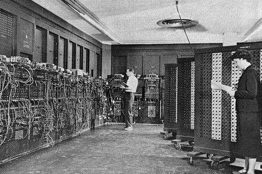
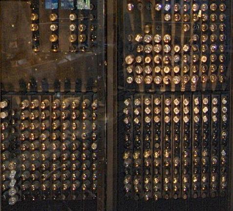
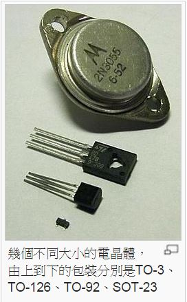

目錄
歷史
3000年前的中國人發明了『算盤』
西元1642年，法國的一位數學家巴斯卡利用齒輪推動的原理發明了第一部會自動進位的計算機稱為『加法器』(Pascaline)。
西元1673年德國人雷布尼茲改良加法器，使其可以完成乘法運算。
西元1801年法國人傑夸德發明使用打孔卡片控制的自動化織布機，啟發電腦將處理程序儲存起來的作法。
西元1820年法國的湯姆斯改良雷布尼茲的乘法器，完成第一部可以執行加、減、乘、除的機器。
西元1833年，「電腦之父」巴貝奇完成差分機，是利用蒸氣為動力的計算機，之後他又研發出可以依照指令的要求去更改執行順序的分析機。
上述的發明只是用來輔助計算的工具，它們都沒有記憶與儲存資料的功能，因此不能稱為『電腦』。
發展
計算機發展的過程依時間先後可分為五個不同時期
●第一代電腦(1946~1953)--真空管時期:
世上第一部電腦由美國的毛琪雷和愛克特在1946年使用真空管作為電子元件製作出來的，稱為ENIAC(Electronic Numerical Integrator Calculator)，共使用了18800個空管。輸入域輸出主要採用穿孔卡片 ，計算機讀進卡片的形式是遵循人類給予的指令流程，但因給予的的指令種類與數量有限，所以這時期無法處理太複雜的工作。
 
●第二代電腦(1954~1963)--電晶體時期:
隨電子科技的快速進步，電子元件由真空管進步至電晶體，其大小只有真空管的二十分一，耗電量及散熱量都少了很多，1954年遂有了以電晶體代替真空管的電製造成功，是第二代電腦的開始。 由於全面性的使用電晶體，以及電腦內部的回路理論的發達等，促進了演算或記憶的高速化和安定化。在電路單元，使用真空管和使用電晶體，其性能和安定性方面有很大的差異。真空管的壽命比較短暫，比較電晶 體的壽命幾乎等於半永久的，其信賴性也比真空管高100倍，從這些事實察知，電腦也迎接了電晶體的黃金時代。在此時代，出現了配合使用目的通用電腦。 這時代的特色乃為編寫程式系統(Programming System )的運用。由於編寫程式系統的出現，那麼對於指揮電腦運轉的程式(處理程序手冊，程式)的編寫成為更容易。 編寫程式系統未被運用以前，人類以機器語 言編寫程式。機器語言就是電腦所能理解的語言，因此人們以人類容易了解的語言編寫一種程式，將人們所要處理的問題的程式語言轉換為機器語言， 再將機器語言轉換為人理的問題的程式語言轉換為機器語言，然 後將機器語言轉換為人類容易了解的語言。這種編譯轉換語言的工作，交由電腦處理，就是編寫程式系統。 這時期，同時也啟用了一種適用於多種企業的業務的應用程式(Application Program)。 至第二代的後半期，出現了資料通信系統，例如火車和飛機訂座位系統，暨人造衛生追蹤系統等。 利用資料通信系統，作即時的資料處理者，稱為線上即時處理(On-line Real-time System)。

●第三代電腦(1964~1971)--積體電路時期：
電晶體的時代維持了十年，1964年4月1日，電腦界的巨無霸－美國IBM 公司向全世界宣佈，使積體電路研製成功IBM 360型電腦，是第三代電腦的開始，電腦的速度又快了幾百倍。 積體電路，一個大小約1公厘(mm)，其中排組了電晶體或二極體、電阻等電路，其排組了約20 個電晶體，40個 阻或電容器等性能的電路。由於採用積體電路，電腦便顯得輕巧。其更大的優點為促進電腦的高性 能化，高信賴化，高速化。電腦有各種各樣的規模，所謂規模之不同，亦表示其演算速度，記憶容量，或事務處理能力等各有差別。
●第四代電腦(1972~?)--超大型積體電路時期:
這時代的積體電晶片從原本只能容納數十個電子元件進步到能容納數千甚至數萬個就稱為超大型積體電路，1970以後普遍稱使用 VLSI的電腦為第四代電腦， 以此發展了並行技術與多機系統。這時代也出現了微型計算機並且以較小的體積、靈活的運用方式等優勢活躍在當時。
●第五代電腦(1990以後):
此代電腦是人工智慧(AI)的時代也可稱為超導體電腦時代，是以超導體、砷化鎵、生物晶片等技術開發而成的電子元件為主，相較前幾代體積更小、處理速度更快，並且具有自行學習與推理能力，這將改變人們的 生活方式並給了未來更大的發展空間。
重要里程碑
個人電腦
在1970年代，個人電腦的概念開始萌芽。然而，直到1980年代初，蘋果（Apple）、IBM以及微軟（Microsoft）等公司推出了第一代個人電腦，才使得普通人能夠在家中使用電腦。這種普及化帶來了大量的用戶，也推動了 軟硬體技術的發展。IBM的IBM個人電腦（IBM PC）在特別發揮了重要作用，因為它確立了後來的標準。
互聯網
網際網路的歷史最早可追溯到1960年代初期，其起源於資訊理論與當時提出的對電腦網路的設想。這個設想的目標是建立一個能使不同電腦的使用者互相進行通信的網路，對它的研發則是源於美國對建立和互連電腦網路的 研究與開發，這個過程還涉及到了國際合作，特別是與來自英國和法國的研究人員的合作。在經過多年多個不同階段的發展過後，這些努力與設想最終發展成了今時今日的網際網路。在1990年代，互聯網的商業化發展使得信息 交流和共享變得更加容易。這個突破將世界聯繫在一起，也為後來的網絡應用、社交媒體、雲計算等技術的發展鋪平了道路。
人工智慧
圖靈於1950年提出的「圖靈測試」，為現正發展的人工智慧科學（Artificial Intelligence, AI）提供了開創性的構想。圖靈測試的概念是評估一台機器是否具有智能的一種方法。在這個測試中，一個評 審（第三者）與一個機器和一個人進行對話，而評審的目標是通過他們的對話無法分辨哪個是機器，哪個是人類。這個概念的目的是評估機器是否能夠模擬人類的智能，包括語言理解、推理和對話。人工智慧的發展旨在讓機器能 夠執行各種智能任務，提供更聰明、更精確、更符合人類需求的服務，這包括自然語言處理、圖像識別、自主學習和問題解決等方面。因此，圖靈測試是人工智慧領域的一個重要參考點，以評估機器的智能程度。讓機器具備人工 智慧，是為了提供更聰明、更精準、更貼近人類需求的服務。
量子計算
量子運算是一個多學科領域，包括電腦科學、物理學和數學的各個方面。它利用量子力學的原理，尤其是疊加和量子干擾，來解決複雜問題，速度要比傳統電腦更快。這個領域涵蓋了硬體研究和應用程式開發，並有潛力在多個領域產生影響。 量子電腦能夠比傳統電腦更快地解決某些類型的問題，這包括機器學習、最佳化和物理系統模擬等應用程式。這種速度提升可能對金融領域的投資組合最佳化或化學系統的模擬等問題有實際應用，甚至可以解決超級電腦無法應對的極其複雜的挑戰。 儘管量子計算仍處於早期研究階段，但其概念和實驗已經顯示出其在處理極其複雜問題上的巨大潛力。一旦量子計算機問世，它將帶來革命性的變化。